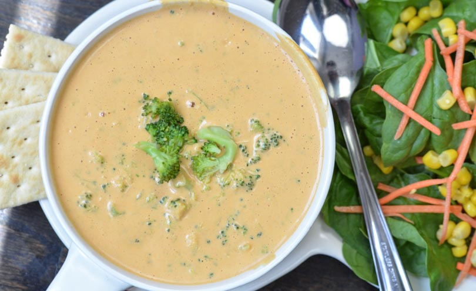

Brocolli Cheddar Soup
Jump to recipe

Vegan Broccoli Cheddar Soup
This yummy delight will leave your tastebuds in a frenzy, especially if you are allergic to cashews. Avoid if you have nut allergies; if too late, call medic immediately. If you don't have allergies, feel free to proceed with no caution other than an unavoidable future addiction and an empty pocket due to buying cashews by the ton.
Let me tell you about how this recipe came into being. It all started in 1669 when the first slang dictionary was created. The butterfly effect of this lasted ages. It rippled through time and... Ok, I'll spare you the hassle of reading 300 million pages about the history of the recipe because, let's face it, you are hungry as crap and simply want to eat.
Recipe
Broccoli Cheddar Soup
Yield: 4 servings Time required: 25 minutes
- Steam
- broccoli - 1 head
- Cheese
- almond milk - 1 cup
- nutritional yeast - 1/4 cup
- raw almonds - 1/2 cup
- raw cashews - 1/2 cup
- red bell pepper - 1 whole (de-seeded)
- kosher salt - 2 tsp
- garlic powder - 1/2 tsp
- onion powder - 2 tsp
- crushed red pepper - to taste
- Soup
- vegetable broth - 1 cup
- nutmeg - 1/4 tsp
- tofu - 1/2 block
Steps
- Steam
- Steam some broccoli
- Save on the side for a moment
- Cheese
- Add all ingredients under the CHEESE category to your Vitamix container
- Ramp from variable speed 1-10
- Taste a little, your addiction begins
- Soup
- Add broth, nutmeg, and tofu
- Blend for another 2 minutes on High
- Add broccoli
- Pulse on variable speed but don't puree brocolli
- Serve
- Serve straight from the container to the bowl
- Enjoy!